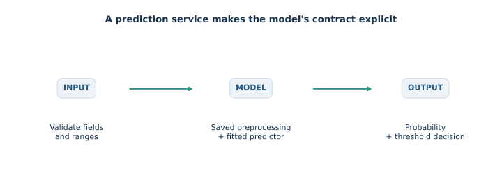

Lecture 08 — One fitted model, one saved policy, one API
Trace one model through fitting, validation-selected decision policy, final assessment, saving, loading, and an HTTP request. The core route uses a single artifact from notebook training through API inference. MLflow tracking and a separate server process are optional extensions. The notebook uses an in-process test client and does not start a background server.

Conceptual serving workflow. The same saved preprocessing is applied to each validated incoming record.
1. What crosses the boundary?
An artifact is a file containing the fitted preprocessing, predictor, and metadata. A server process loads that file into memory. An API is an interface another program calls. An HTTP request sends a JSON object to an endpoint such as /predict; the response contains a status code and data.
The inference path is raw named fields → schema validation → saved preprocessing → probability estimate → stored threshold → JSON response. The scaler, category encoder, and model coefficients were learned during fitting. A request applies those saved quantities; it does not fit them again.
| Lifecycle stage | Input | Output | State that may be learned or chosen |
|---|---|---|---|
fit |
Fitting rows and labels | Fitted pipeline | Numeric means/scales, category levels, logistic coefficients |
predict_proba |
New feature rows | Class probabilities | No new fitted state |
| Validation policy selection | Validation labels and probabilities | Threshold | Decision cutoff under the stated cost rule |
joblib.dump / joblib.load |
Pipeline plus metadata / saved file | Artifact / restored objects | No new model fit |
| API request | One schema-valid JSON record | Probability and decision | No new fitted state; only inference |
The local test client exercises the actual FastAPI endpoint without a long-running server. A successful HTTP exchange checks software behavior. It does not establish that the model is calibrated or useful on future customers.
from pathlib import Path
import sys
import hashlib
import json
import platform
import joblib
import numpy as np
import pandas as pd
import sklearn
import matplotlib.pyplot as plt
from sklearn.model_selection import train_test_split
from sklearn.metrics import precision_score, recall_score, roc_auc_score
ROOT = next(p for p in (Path.cwd(), *Path.cwd().parents)
if (p / "data/churn.csv").is_file())
sys.path.insert(0, str(ROOT / "src"))
from course_ml.train import build_pipeline, FEATURES, CONTRACTS
from course_ml.teaching import local_prediction_client
DATA = ROOT / "data/churn.csv"
OUTPUT = ROOT / ".verification" / "deployment-core"
OUTPUT.mkdir(parents=True, exist_ok=True)
# A unique filename avoids serving a cached artifact during notebook reruns.
from uuid import uuid4
artifact_path = OUTPUT / f"churn-{uuid4().hex}.joblib"
data = pd.read_csv(DATA)
print("Rows:", len(data))
display(data.head(3))
1. What crosses the boundary? · computed output
Rows: 1800
1. What crosses the boundary? · computed output
tenure_months monthly_charge support_calls contract churn 0 10 86.0045 0 annual 0 1 48 63.7697 1 monthly 0 2 42 129.0949 1 annual 0
Load the fixture and locate the project
The setup cell searches the current directory and its parents for the repository marker, adds src to Python's import path, and imports the pipeline builder, feature schema, category values, and local test-client helper. It creates an ignored .verification/deployment-core output folder and a unique filename so an earlier notebook run cannot be mistaken for the current artifact. The SHA-256 later records the exact CSV bytes used.
2. Fit once, choose a policy on validation
The data rows are independent synthetic customer scenarios, so this lesson uses stratified random splits to preserve the positive-class fraction in each partition. This split is suitable for this fixture's stated sampling setup; temporal or grouped observations require a split that respects their dependence.
The pipeline learns standardization, category encoding, and logistic coefficients from fitting rows only. A probability is not itself an action. Under illustrative costs $C_{FN}=5$ for a missed churn and $C_{FP}=1$ for an unnecessary contact, a cutoff $\tau$ induces decision $d=\mathbf 1[p\geq\tau]$ and validation cost
$$C(\tau)=C_{FN}\sum_i\mathbf 1[y_i=1,d_i=0]+C_{FP}\sum_i\mathbf 1[y_i=0,d_i=1].$$
We choose the minimum among 19 candidate thresholds from 0.05 through 0.95; equal costs select the smaller cutoff. This is an empirical policy choice for the validation sample. A theoretical cost cutoff $C_{FP}/(C_{FP}+C_{FN})$ follows only when probabilities are calibrated for the deployment population and the two stated costs are the relevant decision costs. Here we retain the validation-selected value and then freeze both it and the fitted pipeline. We do not refit on validation rows, because that would change the probability function after selecting its cutoff.
X, y = data[FEATURES], data["churn"].astype(int)
X_development, X_test, y_development, y_test = train_test_split(
X, y, test_size=0.25, random_state=42, stratify=y
)
X_fit, X_validation, y_fit, y_validation = train_test_split(
X_development, y_development, test_size=0.20, random_state=17, stratify=y_development
)
pipeline = build_pipeline().fit(X_fit, y_fit)
positive_column = list(pipeline.classes_).index(1)
validation_probabilities = pipeline.predict_proba(X_validation)[:, positive_column]
C_FN, C_FP = 5.0, 1.0
validation_rows = []
for cutoff in np.linspace(0.05, 0.95, 19):
decisions = validation_probabilities >= cutoff
fn = np.sum((y_validation.to_numpy() == 1) & ~decisions)
fp = np.sum((y_validation.to_numpy() == 0) & decisions)
validation_rows.append({"threshold": float(cutoff), "cost": C_FN * fn + C_FP * fp,
"alerts": int(decisions.sum())})
validation_table = pd.DataFrame(validation_rows)
selected = validation_table.sort_values(["cost", "threshold"]).iloc[0]
threshold = float(selected.threshold)
print("Validation-selected threshold:", threshold)
display(validation_table)
fig, ax = plt.subplots(figsize=(8, 3))
ax.plot(validation_table.threshold, validation_table.cost, "o-")
ax.scatter([threshold], [selected.cost], color="crimson", zorder=3, label="Selected on validation")
ax.set(xlabel="Threshold", ylabel="Illustrative validation cost", title="Choose the policy before final assessment")
ax.legend()
plt.tight_layout()
plt.show()
2. Fit once, choose a policy on validation · computed output
Validation-selected threshold: 0.25
2. Fit once, choose a policy on validation · computed output
threshold cost alerts 0 0.05 180.0 236 1 0.10 160.0 198 2 0.15 147.0 173 3 0.20 144.0 128 4 0.25 141.0 101 5 0.30 157.0 87 6 0.35 167.0 67 7 0.40 189.0 47 8 0.45 219.0 35 9 0.50 249.0 23 10 0.55 266.0 16 11 0.60 273.0 11 12 0.65 286.0 6 13 0.70 291.0 5 14 0.75 296.0 4 15 0.80 305.0 1 16 0.85 310.0 0 17 0.90 310.0 0 18 0.95 310.0 0

Read the split and fit lifecycle
FEATURES fixes the column order expected by preprocessing and serving. The outer split reserves test data; stratify=y preserves class proportions and random_state makes membership repeatable. The inner split creates fitting and validation rows from development data. build_pipeline().fit(...) learns all preprocessing and logistic parameters using fitting rows. classes_ identifies the column for positive class 1, so probability extraction does not silently assume a column order. The loop applies each candidate cutoff to validation probabilities and counts false negatives and false positives under the stated costs.
3. Assess the frozen pipeline and save the same policy
Apply the already selected pipeline and cutoff once to the final test partition. These metrics describe that frozen pair; they do not select another threshold. ROC AUC uses probability rankings and does not depend on the cutoff. Precision, recall, and the illustrative cost do depend on it.
The artifact is a dictionary with two parts: pipeline contains the fitted transformations and logistic estimator; metadata records the ordered feature schema, allowed category values, positive class, cutoff, metrics, partition sizes, SHA-256 of the source CSV, and Python/library versions. Saving both model and policy preserves the intended API behavior. joblib uses Python object serialization, so load only trusted files and keep a compatible software environment.
test_probabilities = pipeline.predict_proba(X_test)[:, positive_column]
test_decisions = test_probabilities >= threshold
metrics = {
"roc_auc": float(roc_auc_score(y_test, test_probabilities)),
"precision": float(precision_score(y_test, test_decisions, zero_division=0)),
"recall": float(recall_score(y_test, test_decisions, zero_division=0)),
"cost": float(C_FN * np.sum((y_test.to_numpy() == 1) & ~test_decisions)
+ C_FP * np.sum((y_test.to_numpy() == 0) & test_decisions)),
}
metadata = {
"artifact_format": 1, "features": FEATURES, "contract_values": CONTRACTS,
"positive_class": 1, "threshold": threshold, "metrics": metrics,
"fit_rows": len(X_fit), "validation_rows": len(X_validation), "test_rows": len(X_test),
"data_sha256": hashlib.sha256(DATA.read_bytes()).hexdigest(),
"dependency_versions": {"python": platform.python_version(), "scikit_learn": sklearn.__version__,
"pandas": pd.__version__, "numpy": np.__version__},
}
artifact = {"pipeline": pipeline, "metadata": metadata}
joblib.dump(artifact, artifact_path)
print("Saved:", artifact_path.name)
display(pd.Series(metrics, name="Final test metrics"))
3. Assess the frozen pipeline and save the same policy · computed output
Saved: churn-c5252101f56d4f1aaea160e1159dbf2a.joblib
3. Assess the frozen pipeline and save the same policy · computed output
roc_auc 0.764312 precision 0.464286 recall 0.625000 cost 270.000000 Name: Final test metrics, dtype: float64
Score once and package the policy
The code computes class-1 probabilities on untouched test rows, applies the frozen threshold, then reports ranking quality and threshold-dependent metrics. Metadata fields make the artifact interpretable: schema and categories define input compatibility, positive_class and threshold define the action rule, metrics and partition sizes describe this run, data_sha256 identifies the input bytes, and dependency versions document the environment. joblib.dump serializes the fitted pipeline and metadata as one file.
4. A successful prediction before and after saving
The fictional customer is a software-contract probe, not an extra evaluation row. Construct one-row input with the same named feature columns, call the fitted pipeline predict_proba, then load the saved artifact and call its pipeline on the same record. Equality checks that serialization preserved the probability function to numerical precision. The saved cutoff turns that probability into a 0/1 decision.
customer = {"tenure_months": 8, "monthly_charge": 92.0,
"support_calls": 4, "contract": "monthly"}
customer_row = pd.DataFrame([customer], columns=FEATURES)
before_saving = float(pipeline.predict_proba(customer_row)[0, positive_column])
loaded = joblib.load(artifact_path)
after_loading = float(loaded["pipeline"].predict_proba(customer_row)[0, positive_column])
np.testing.assert_allclose(before_saving, after_loading, rtol=0, atol=1e-12)
print({"before_saving": before_saving, "after_loading": after_loading,
"threshold": loaded["metadata"]["threshold"],
"decision": int(after_loading >= loaded["metadata"]["threshold"])})
4. A successful prediction before and after saving · computed output
{'before_saving': 0.7378078852870725, 'after_loading': 0.7378078852870725, 'threshold': 0.25, 'decision': 1}Check save/load equivalence
A one-row DataFrame preserves named columns for the ColumnTransformer. The same row passes through the in-memory pipeline and the restored pipeline. assert_allclose checks the floating-point probabilities; the printed decision uses the cutoff stored with the restored model.
5. Send the same customer to the API
client.post sends a JSON mapping to the real /predict route through FastAPI's in-process test client. FastAPI validates the body, constructs the model input, loads the configured artifact, and returns a typed response. .json() decodes that response into Python values. The assertions compare the API probability, stored threshold, and decision with direct in-memory and reloaded paths.
See the official FastAPI request body guide for how Pydantic models define JSON request bodies.
with local_prediction_client(artifact_path) as client:
response = client.post("/predict", json=customer)
assert response.status_code == 200
result = response.json()
np.testing.assert_allclose(result["churn_probability"], before_saving, rtol=0, atol=1e-12)
assert result["threshold"] == threshold
assert result["prediction"] == int(before_saving >= threshold)
print("HTTP status:", response.status_code)
print(json.dumps(result, indent=2))
print("Parity verified: before saving = after loading = API probability.")
5. Send the same customer to the API · computed output
HTTP status: 200
{
"churn_probability": 0.7378078852870725,
"threshold": 0.25,
"prediction": 1
}
Parity verified: before saving = after loading = API probability.Trace the HTTP boundary
The context manager temporarily points the API at this run's artifact. The request JSON is the same fictional customer record used above. A 200 response and numerical comparisons show that request validation, artifact loading, preprocessing, scoring, and threshold application agree with direct calls.
6. Reject an invalid request
The API input model requires all four fields, forbids undeclared fields, checks numeric ranges, and restricts contract to three documented values. A quarterly contract violates that enumeration, so FastAPI returns status 422 before model scoring. Invalid software inputs should fail at the contract boundary with a clear validation response.
The FastAPI error handling guide describes request validation errors and status 422.
with local_prediction_client(artifact_path) as client:
invalid = client.post("/predict", json={**customer, "contract": "quarterly"})
assert invalid.status_code == 422
print("Invalid request status:", invalid.status_code)
print(json.dumps(invalid.json(), indent=2))
6. Reject an invalid request · computed output
Invalid request status: 422
{
"detail": [
{
"type": "literal_error",
"loc": [
"body",
"contract"
],
"msg": "Input should be 'monthly', 'annual' or 'two_year'",
"input": "quarterly",
"ctx": {
"expected": "'monthly', 'annual' or 'two_year'"
}
}
]
}The invalid request deliberately changes one schema field while retaining the rest. Status 422 comes from request validation, before the pipeline receives a row. FastAPI includes structured error details in the response body.
7. Inspect the contract you will hand off
The artifact on disk is loaded into a process and cached by path. Replacing the file does not retrain the estimator; an existing process can continue using its cached in-memory artifact until it reloads or restarts. Metadata makes the expected schema, selected cutoff, data identity, and dependency versions inspectable. A data hash identifies the training file used here, while dependency versions help recreate the serialization environment; neither guarantees identical behavior across every platform or future library release.
| Request field | Accepted value | Why it is constrained |
|---|---|---|
tenure_months |
Integer from 0 to 120 | Matches the modeled range and rejects negative tenure |
monthly_charge |
Finite number from 0 to 100,000 | Prevents non-finite and out-of-range inputs |
support_calls |
Integer from 0 to 10,000 | Preserves count semantics and bounds input |
contract |
monthly, annual, or two_year | Must match categories represented by the model contract |
An invalid request receives 422. If the artifact is absent or fails its format, schema, or probability checks, /health and /predict return 503. A successful 200 response confirms an accepted request was scored; input drift can still weaken statistical assumptions. This synthetic local service does not implement authentication, TLS, privacy controls, rate limits, or operational monitoring.
display(pd.Series(loaded["metadata"]))
fig, ax = plt.subplots(figsize=(8, 3))
ax.bar(["Before saving", "After loading", "API"],
[before_saving, after_loading, result["churn_probability"]], color=["#285b85", "#26938a", "#c47739"])
ax.axhline(threshold, color="black", linestyle="--", label="Saved decision threshold")
ax.set(ylim=(0, 1), ylabel="Churn probability", title="One artifact, three equivalent inference paths")
ax.legend()
plt.tight_layout()
plt.show()
7. Inspect the contract you will hand off · computed output
artifact_format 1
features [tenure_months, monthly_charge, support_calls,...
contract_values [monthly, annual, two_year]
positive_class 1
threshold 0.25
metrics {'roc_auc': 0.7643119164072922, 'precision': 0...
fit_rows 1080
validation_rows 270
test_rows 450
data_sha256 898c44641ba4d89be279e5739c7da2689230303499b67e...
dependency_versions {'python': '3.12.10', 'scikit_learn': '1.9.1',...
dtype: object
Optional extension: track this exact artifact with MLflow
Tracking records a run's parameters, metrics, tags, and artifact files so results can be inspected later. This cell logs the same saved artifact, the validation-selected cutoff, final-test metrics, and source-data hash without fitting another estimator. The local SQLite tracking URI belongs to this MlflowClient instance, so the cell does not change a process-wide tracking setting. Tracking supplies provenance and comparison; it does not improve the model or automatically serve it.
import os
os.environ.setdefault("MLFLOW_DISABLE_TELEMETRY", "true")
from mlflow import MlflowClient
tracking_directory = ROOT / ".verification" / "deployment-tracking"
tracking_directory.mkdir(parents=True, exist_ok=True)
tracking_client = MlflowClient(tracking_uri="sqlite:///" + (tracking_directory / "mlflow.db").as_posix())
experiment_name = "single-artifact-deployment"
experiment = tracking_client.get_experiment_by_name(experiment_name)
experiment_id = (experiment.experiment_id if experiment else
tracking_client.create_experiment(experiment_name))
run = tracking_client.create_run(experiment_id)
run_id = run.info.run_id
tracking_client.log_param(run_id, "threshold", threshold)
tracking_client.set_tag(run_id, "data_sha256", metadata["data_sha256"])
for name, value in metrics.items():
tracking_client.log_metric(run_id, name, value)
tracking_client.log_artifact(run_id, str(artifact_path))
tracking_client.set_terminated(run_id)
print("Tracked the same saved artifact in run:", run_id)
Optional extension: track this exact artifact with MLflow · computed output
Tracked the same saved artifact in run: a71f773c9b6c472fbca003b6684a87c9
Read the tracking calls as bookkeeping
The client finds or creates a named experiment, creates a run, and logs the threshold as a parameter, the CSV hash as a tag, final metrics as metrics, and the exact joblib file as an artifact. set_terminated closes the run. The SQLite database and run ID make the record inspectable locally; tracking does not alter the model or threshold.
Optional extension: a separate server process and Docker
The deployment README gives commands to start Uvicorn and build the Docker image. The command-line trainer creates its own artifact using the documented default threshold; it is an independent training run. To serve this notebook's exact fitted pipeline and validation-selected cutoff, set MODEL_PATH to the saved path before starting python -m uvicorn course_ml.app:app --host 127.0.0.1 --port 8001. The process reads the path from its environment and caches the artifact after loading.
What the notebook helper handles
course_ml.teaching.local_prediction_client temporarily sets MODEL_PATH, clears the API's artifact cache, opens TestClient, then restores the prior environment and cache in a finally block. This makes sequential demonstrations use the chosen file even when the notebook is rerun. A real server should receive its model path before startup; the helper's temporary environment changes are not intended for concurrent routing.
The saved function is reproducible when a trusted artifact, compatible Python/library environment, ordered schema, and preprocessing implementation are available. The API contract checks whether one record can be accepted and scored. Statistical monitoring must separately check whether later records still resemble the data and whether predictions remain useful.